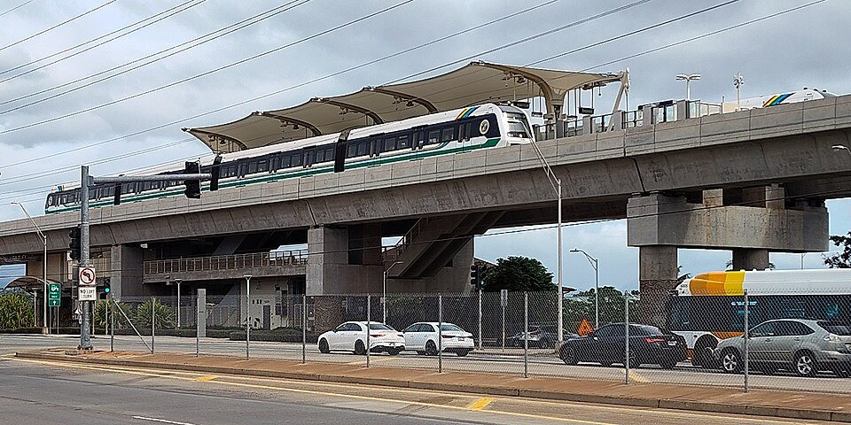

Kualakaʻi Rail Station
Place: Kualakaʻi Rail Station, East Kapolei, Oʻahu
Type: Skyline rail station / western terminus
Namesake: Kualakaʻi (“to show the way, stand and lead”), a traditional place name within the ahupuaʻa of Honouliuli
Story it tells: How Honolulu's modern rail system revived an older Hawaiian place name associated with travel, navigation, and guidance for the western gateway to Skyline.

Kualakaʻi Rail Station is the western terminus of Honolulu's Skyline rail system, standing at the intersection of Kualakaʻi and Keahumoa parkways in plains between Kapolei and ʻEwa. The elevated station opened on June 30, 2023, as part of Skyline's first operating segment. Although it was originally known during planning as East Kapolei Station, its official name reaches much farther back than the nearby communities.
Kualakaʻi is a traditional place name within the ahupuaʻa of Honouliuli, historically connected with an area closer to the coast near Kalaeloa and Barber's Point. The name means “to show the way, stand and lead,” giving it an appropriate connection to movement and wayfinding. The naming process for the rail stations brought an older name from the surrounding cultural landscape back into everyday use in this particular case.
Hawaiian traditions connect Kualakaʻi with Kauluakahaʻi, a legendary voyager and the father of Nāmakaokapāoʻo. Kauluakahaʻi was said to have planted an ʻulu, or breadfruit tree, at Kualakaʻi where royal garments were deposited.
Before Western contact, the broad leeward plains of Honouliuli supported drought-tolerant crops such as ʻuala and Native Hawaiians gathered grasses and other materials from the kula lands as well. Communities moved between the shoreline, dry interior plains, and uplands, creating networks of travel and exchange across the ahupuaʻa.
During the plantation era, much of the area surrounding the Kualakaʻi Rail Station was converted to mass plantation agriculture. Beginning in the late nineteenth century, the Oahu Sugar Company cultivated enormous areas of the ʻEwa plain, and sugar remained a defining feature of the region until the company closed in 1995. After the plantation era ended, large areas of former cane land remained open while Kapolei developed as Oʻahu's planned “Second City.” Housing, roads, businesses, and new communities gradually spread across the fields.
The rail project became another part of that transformation. A ceremonial groundbreaking for the future East Kapolei station was held in 2012, although construction was interrupted while archaeological and historic preservation requirements were addressed. Work later resumed, and over the following decade concrete columns, guideways, platforms, canopies, and other infrastructure rose above what had recently been largely open land.
As the construction progressed, another effort was underway to reconsider how the rail stations would be identified. The Hawaiian Station Naming Working Group brought together Hawaiian language experts, cultural practitioners, educators, kūpuna, and community members to research traditional names associated with places along the rail corridor. The group sought names that could reconnect riders with the older geography and connect transit and riders to the cultural names of the area.
For the station then known as East Kapolei, the group recommended Kualakaʻi. The HART Board of Directors officially adopted the name in 2018. Its meaning was particularly fitting for the western end of the system: a name associated with showing the way and leading was placed at the station where eastbound Skyline journeys begin. East Kapolei remains in use as a secondary geographic identifier, helping riders locate the station with a modern naming convention.
When Kualakaʻi opened to passengers on June 30, 2023, a traditional Hawaiian place name was placed on station signs, rail maps, announcements, and transit information throughout Oʻahu.
The driver-less rail system and its network are unmistakably modern, but its stations provide a new way for much older names to return to the public landscape. At Kualakaʻi, a name connected to travel and guidance now marks the beginning of a new form of transportation across Oʻahu, allowing an older piece of Honouliuli's geography to once again lead the way.